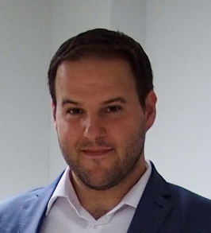
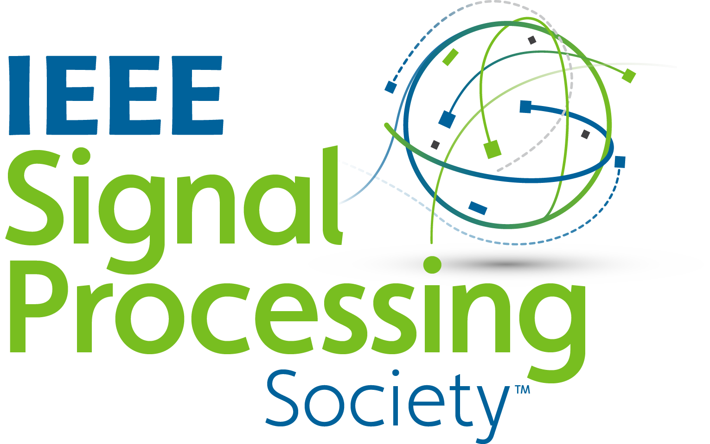

IEEE Finland Workshop on Signal Processing and Circuits and Systems
03. - 05.10.2022.
Click here for a free registration.
This workshop is organized by the IEEE Finland Jt. Chapter SP/CAS and consists of expert talks as well as a best paper award. It is implemented as a hybrid event, with the in-person component taking place at Aalto University in Otaniemi, Espoo.
Schedule (times are EEST, local Helsinki time)
|  | Prof. Alex Jung, Aalto University Date and Time: TBA recording: click here slides: click here |
Acknowledgment
This workshop is supported by the IEEE Signal Processing Society and the Department of Computer Science at Aalto University. The school is also supported by the TalTech Industrial project. TalTech Industrial has received funding from the European Union’s Horizon 2020 research and innovation programme under grant agreement No 952410. We also acknowledge support received from the Academy of Finland, via the project ‘‘Intelligent Techniques in Condition Monitoring of Electromechanical Energy Conversion Systems,’’ (decision number 331197).
